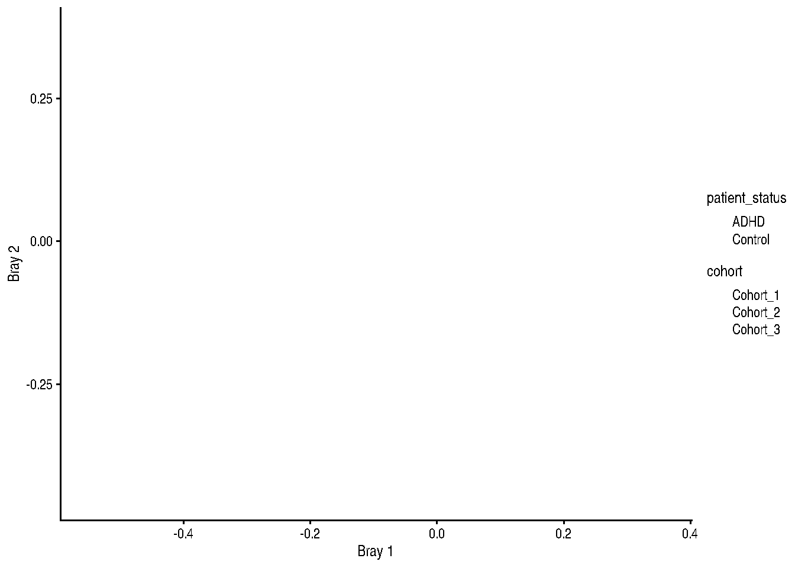
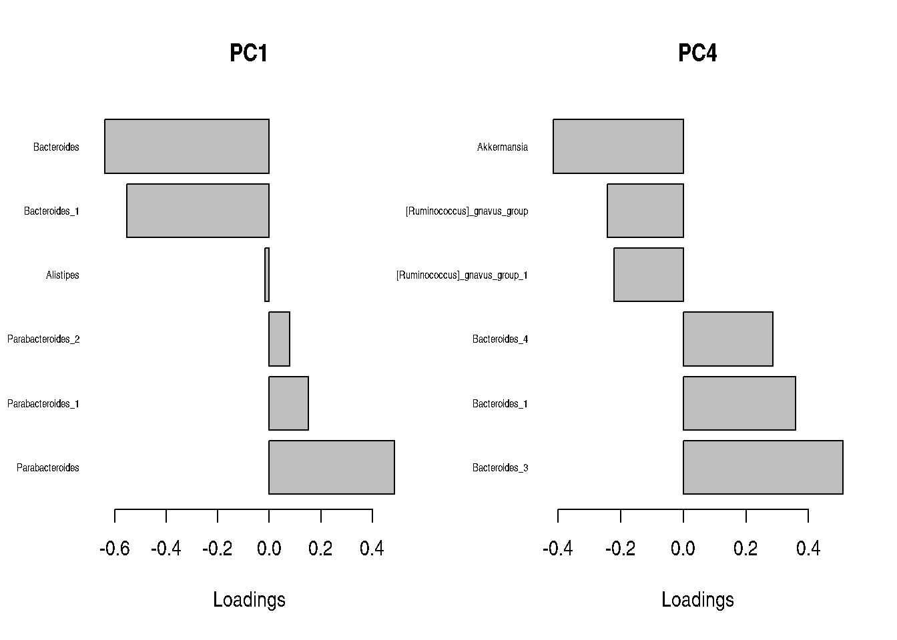
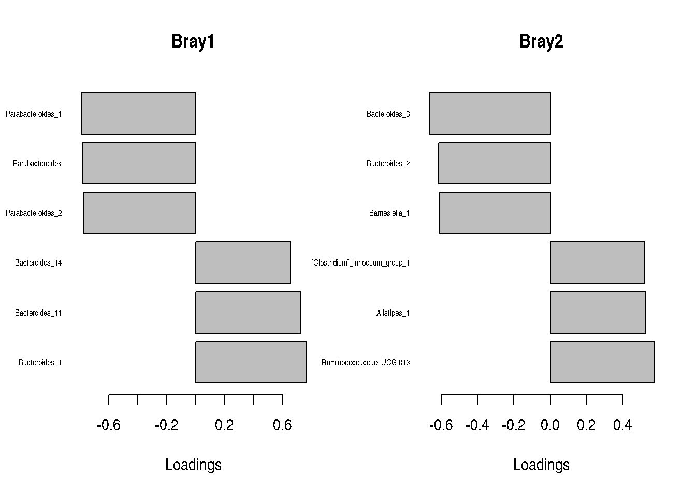
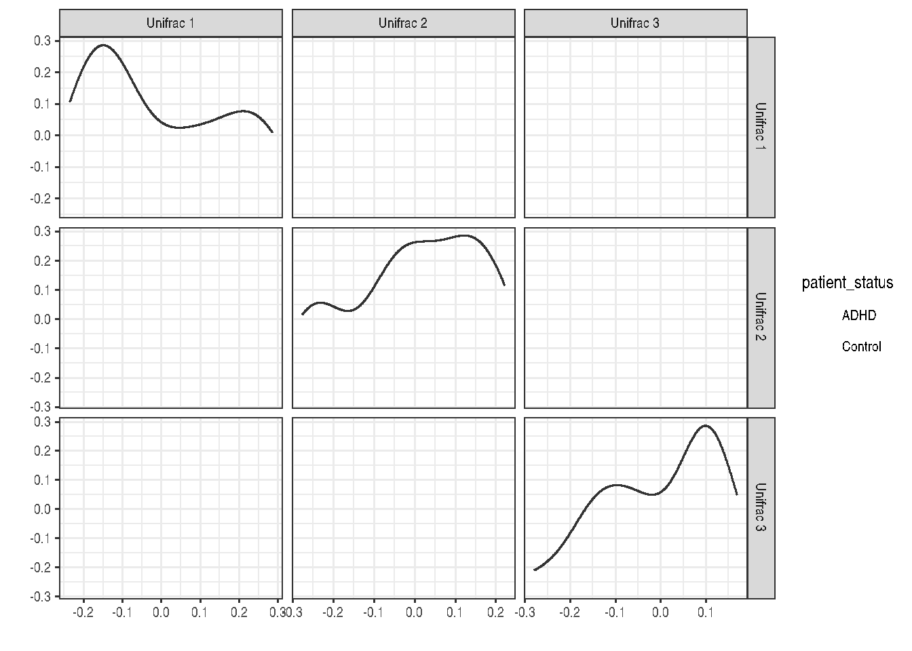
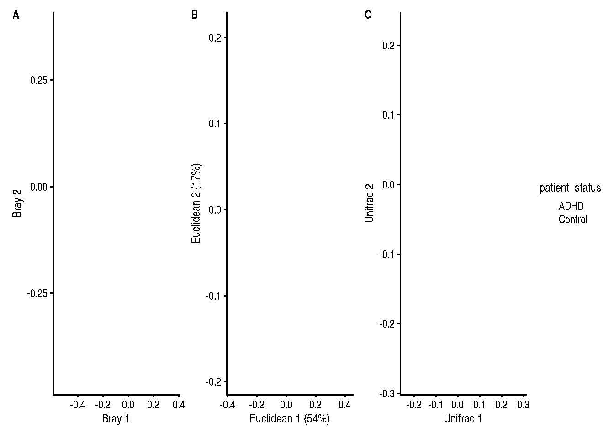

# Load libraries and import dataset
library(mia)
library(scater)
data("Tengeler2020", package = "mia")
tse <- Tengeler2020Principal Coordinate Analysis
Why PCoA?
Principal Coordinate Analysis (PCoA) is a method to study beta diversity, or the diversity between microbial communities from different samples.

Example 1.1
To get started, we import Tengeler2020 from mia and store it into a variable.
After that, we transform the counts assay to relative abundances and store the new assay back into the TreeSE.
# Transform counts to relative abundance
tse <- transformAssay(tse, method = "relabundance")Example 1.2: Ordination
Here, we run PCoA on the relative abundance assay to reduce the dimensionality of the data. We set method to Bray-Curtis dissimilarity.
# Run PCoA with Bray-Curtis dissimilarity
tse <- runMDS(tse,
assay.type = "relabundance",
FUN = vegan::vegdist,
method = "bray",
name = "Bray")The reduced dimensions can be retrieved with reducedDim.
head(reducedDim(tse, "Bray")) [,1] [,2]
A110 0.35648020 0.11979800
A12 -0.01837414 -0.35553853
A15 0.14308108 0.36730630
A19 0.03031075 -0.34670413
A21 0.07539063 -0.31823525
A23 0.17993859 0.09476674Example 1.2: Visualisation
Then, we visualise the first two dimensions.
# Visualise Bray-Curtis dissimilarity between samples
plotReducedDim(tse, "Bray", colour_by = "patient_status", shape_by = "cohort")
Exercise 1
- retrieval of reduced dimensions: exercise 7.1
- PCoA: exercise 7.3
Example 2.1: PCA
When Euclidean distance is used, PCoA reduces to PCA.
tse <- runPCA(tse,
assay.type = "relabundance",
ncomp = 5,
name = "Euclidean")We can retrieve a list of all reduced dimensions with reducedDimNames.
reducedDimNames(tse)[1] "Bray" "Euclidean"If you need only their names, these can be accessed with reducedDims.
reducedDims(tse)List of length 2
names(2): Bray EuclideanExample 2.2: PCA Contributors
Some taxa contribute more than others to the generation of reduced dimensions. They can be determined from the PCA loadings.
Show code
# Define function to visualise top contributors
plot_loads <- function(loads, comp, n = 6) {
loads <- sort(loads[ , comp], decreasing = TRUE)
loads <- c(head(loads, round(n / 2)), tail(loads, round(n / 2)))
barplot(loads, horiz = TRUE, las = 1,
cex.names = 0.5, main = comp, xlab = "Loadings")
}The top PCA loadings for the first and fourth dimension are visualised below.
Show code
# Fetch feature loadings
taxa_loads <- attr(reducedDim(tse, "Euclidean"), "rotation")
# Plot loadings for PCA 1 and 4
par(mfrow = c(1, 2))
plot_loads(taxa_loads, "PC1")
plot_loads(taxa_loads, "PC4")
Example 2.3: PCoA Contributors
PCoA does not return feature loadings, but they can be estimated as the correlation between taxa and reduced dimensions.
Show code
# Compute correlation between features and reduced dimensions
comp_loads <- apply(
assay(tse, "relabundance"),
MARGIN = 1, simplify = FALSE,
function(x) cor(x, reducedDim(tse, "Bray"), method = "kendall")
)
# Prepare matrix of feature loadings
taxa_loads <- do.call(rbind, comp_loads)
colnames(taxa_loads) <- paste0("Bray", seq(ncol(taxa_loads)))
rownames(taxa_loads) <- rownames(tse)The top PCoA loadings for the first two dimensions are visualised below.
Show code
# Visualise loadings for PCoA 1 and 2
par(mfrow = c(1, 2))
plot_loads(taxa_loads, "Bray1")
plot_loads(taxa_loads, "Bray2")
Exercise 2
- PCA: exercise 7.2
Extra:
Find the top 5 contributor taxa for principal component 1.
Example 3.1: Other Distances
A different distance function can be specified with FUN, such as phylogenetic distance.
# Run PCoA with Unifrac distance
tse <- runMDS(tse, assay.type = "counts", name = "Unifrac", ncomp = 3,
FUN = mia::calculateUnifrac, tree = rowTree(tse))The number of dimensions to visualise can also be adjusted with ncomp.
# Visualise Unifrac distance between samples
plotReducedDim(tse, "Unifrac", ncomp = 3, colour_by = "patient_status")
Example 3.2: Comparison
Different ordination methods return considerably different results, which can be compared to achieve a better understanding of the data.
Show code
library(patchwork)
# Generate plots for
plots <- lapply(reducedDimNames(tse),
plotReducedDim,
object = tse,
colour_by = "patient_status")
# Generate multi-panel plot
wrap_plots(plots) +
plot_layout(guides = "collect") +
plot_annotation(tag_levels = "A")
Exercise 3
Run MDS on the CLR assay with Euclidean distance and compare the results with the previous PCoA and PCA.
Extra:
Make a plot with the first three dimensions, and a plot with the second and fourth dimensions.